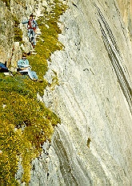

Longs Peak: Kiener's Route

One of the most awesome climbs in the park, yet still very accessible to the
beginning climber, Kiener's Route is a Colorado Experience favorite. The
route starts at Mills Glacier and proceeds up a 1000 foot couloir known as
Lamb's Slide (ice axes and crampons required to climb Lamb's Slide.) Moving
off Lamb's Slide, you are led across Broadway, a narrow ledge varying in
width from several feet to six inches. The ledge overlooks a sheet of
granite plunging down to Chasm Lake far below. Proceeding up from Broadway,
you will climb to the summit of Longs Peak following a route requiring
climbing gear and climbing technique. Kiener's is one of North America's
classic climbs.
Difficulty Level: Beginner to
moderate
Time: Allow for one day
Physical stress: Moderate